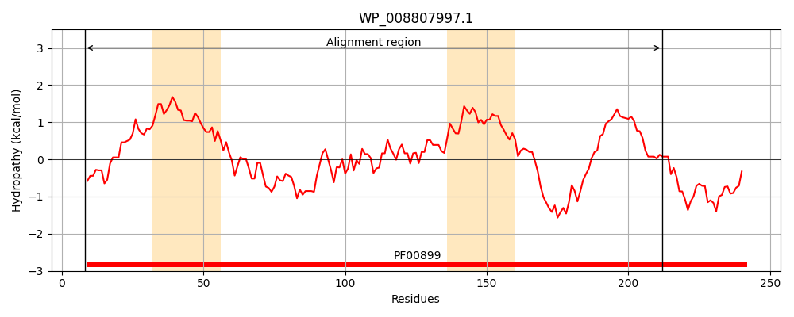
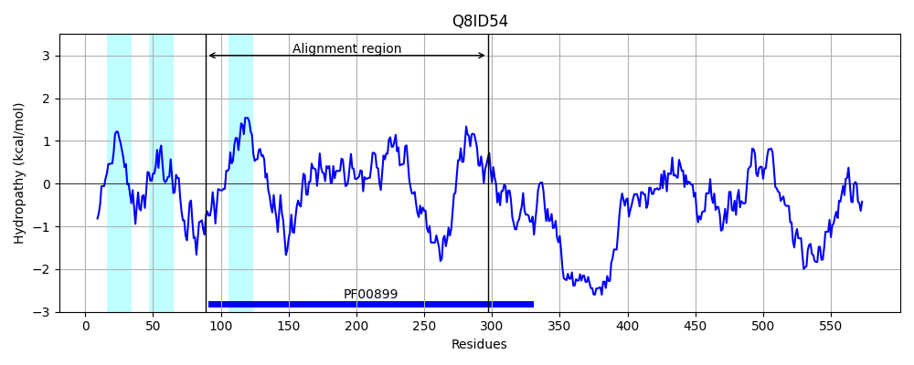
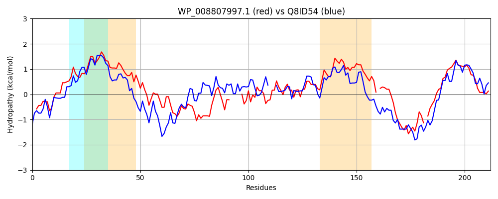

Hit Accession: Q8ID54
Hit TCID: 3.A.25.2.1
Hit Description: gnl|BL_ORD_ID|16318 gnl|TC-DB|Q8ID54|3.A.25.2.1 UBA/THIF-type NAD/FAD binding protein, putative OS=Plasmodium falciparum (isolate 3D7) GN=PF13_0344 PE=4 SV=1
Mach Len: 212
e:0.000000
Query TMS Count : 2
Hit TMS Count: 3
TMS-Overlap Score: 0.600000
Predicted Substrates:CHEBI:16670;peptide
BLAST Alignment:
Score: 295 , Bit scores: 118 bits, E-value: 2.0e-30, Alignment length: 212, Percentage identity: 36
Query: 8 RYSRQLLLEDIAIEGQQKLLASRVLIIGLGGLGSPAALYLAGAGVGTLTLADDDAVHLSNLQRQILFTSEDIDRPKAAAAKTRLSQLNPQIK-----LVALQQRLSGEALRAEVAKADVVLDCTDNMVTRQAINAACVALDTPLVTASAVGFGGQLMVLT-PPWAQGCYRCLWPDSDEPQRN-CRTAGIVGPVVGMMGTLQALEAIKLLSGM 212
R+ + L + DI + K+ +++LIIGLGGLGSP LYL+ G + L D D V SNL RQI+ + I K +AK L ++ + +L+G + + + D+++DCTDN+ TR IN C+ L+ ASA+G GQ+ V CYRCL ++ Q N C GI+ V G++G LQA E IKL G+
Sbjct: 89 RHGKLLNIYDIPHDSLYKIFNTKILIIGLGGLGSPVCLYLSKFGFKEIGLVDGDKVEKSNLHRQIIHKEKYIGLNKCISAKLFLKDMDVHVSDCIKCYPFFLDKLNGINI---IKEYDIIIDCTDNISTRFLINDLCILYKKKLIFASALGIYGQVNVYNLNNNTSSCYRCLKSFNNHSQNNDCDENGILSTVTGVIGLLQANEVIKLSIGL 297 | Protein Hydropathy Plots: |
|---|
|  |  |
Pairwise Alignment-Hydropathy Plot:
|
|---|
|  |